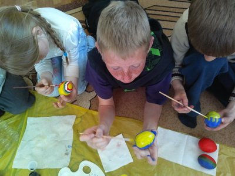
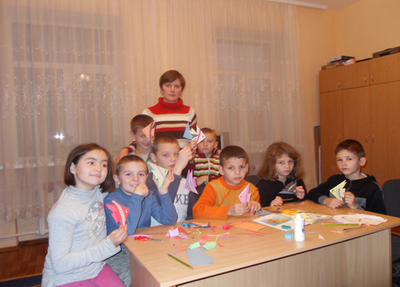
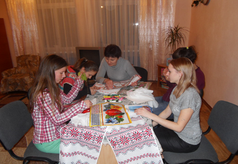
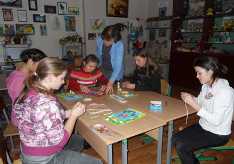
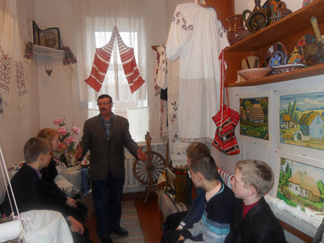
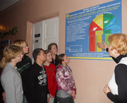
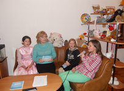
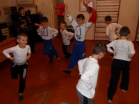
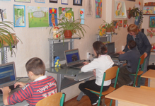

Гуртки
Гурток «Чарівний пензлик»

Керівник Ковальчук Ігор Віталійович
Мета : розвивати у дітей вміння відчувати прекрасне у природі, навчати спостерігати за красою навколишнього світу, дотримуватись у зображені пропорцій і розмірів, розвивати творчу уяву, навчити розуміти мову образотворчого мистецтва.
Гурток «Маленькі майстри»

Керівник Терпило Наталія Євгеніївна
Мета : формувати прийоми роботи з ножицями та папером, удосконалювати практичні вміння, навички, розвивати дрібну моторику руки, виховувати естетичні смаки в учнів та почуття прекрасного.
Гурток «Веселі барви»
Керівник Любименко Тетяна Михайлівна
Мета : вчити дітей спостерігати і бачити красу навколишнього світу, розвивати образне мислення, вміння відтворювати на папері. Розвивати уяву, фантазію, художній смак та творчі здібності учнів. Виховувати розуміння мови мистецтва як форми міжособистісного спілкування.
Гурток «Чарівна голочка»

Керівник Хора Ольга Василівна
Мета : вчити народній вишивці дітей поглиблювати обізнаність учнів про види декоративно-прикладного мистецтва, виховувати почуття прекрасного, прививати любов до української вишивки, традиції рідного народу.
Гурток «Виготовлення сувенірів»

Керівник Цедик Рита Петрівна
Мета : формувати вміння аналізувати, порівнювати, узагальнювати: розвивати творчу уяву, спостережливість, акуратність. Виховувати зацікавленість творчою діяльністю в умовах практичної роботи, любов до своїх друзів та рідних.
Гурток «Українські звичаї в сучасному побуті»

Керівник Максименко Любов Петрівна
Мета : Вчити цінувати національну самобутність і культурну спадщину України, плекати і бути гордим за наші традиції, які в нашому сучасному світі не втрачають своєї чарівності і краси.

Гурток «Не загуби себе в житті»
Керівник:Калита Галина Тихонівна
Мета : знайомити учнів з світом професій , нормативними документами, готувати до самостійного життя.

Керівник Ісаєва Зінаїда Григорівна
Мета : отримання необхідних знань у галузі світової та української культури, акторських навичок, формування компетентностей особистості засобами естрадної пісні.

Керівник Колодзейська Неля Миколаївна
Мета : розвиток творчих здібностей у дітей, підвищення їх загальної хореографічної культури.

Керівник Бруснікіна Ганна Володимирівна
Мета : формування в учнів знань та умінь, необхідних для ефективної обробки інформації , використання комп’ютерних зображень у навчальній діяльності.